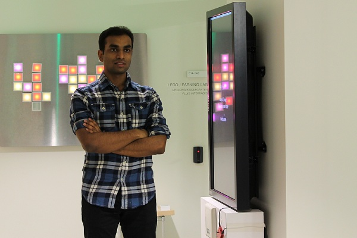

|  |
Otkrist Gupta is currently Vice President of Data Science at Lendbuzz, focussing on deep learning with applications in finance and computer vision.
He completed his Ph.D. at MIT Media Lab from camera culture group. His research is focused on inventing new algorithms for deep learning for health
screening and diagnosis, hidden geometry detection, exploiting techniques from optimization, linear algebra and compressive sensing. He also works on
designing algorithms for futuristic 3D projective displays.
Before joining MIT Media Lab Otkrist worked in Google Now team where he built voice actions such as take a picture and
what's on my Chromecast and worked on voice response quality from Google Now. He also worked at LinkedIn where he developed
services such as Smart ToDo, Ultra fast auto-complete, Notifications and CheckIn platform. He completed his bachelors
from Indian Institute of Technology Delhi (IITD) in Computer Science with emphasis on algorithms and linear algebra. After graduating from IITD,
he worked for one year in field of High Frequency Trading at Tower Research Capital.
|